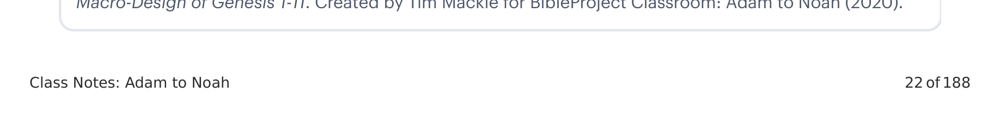
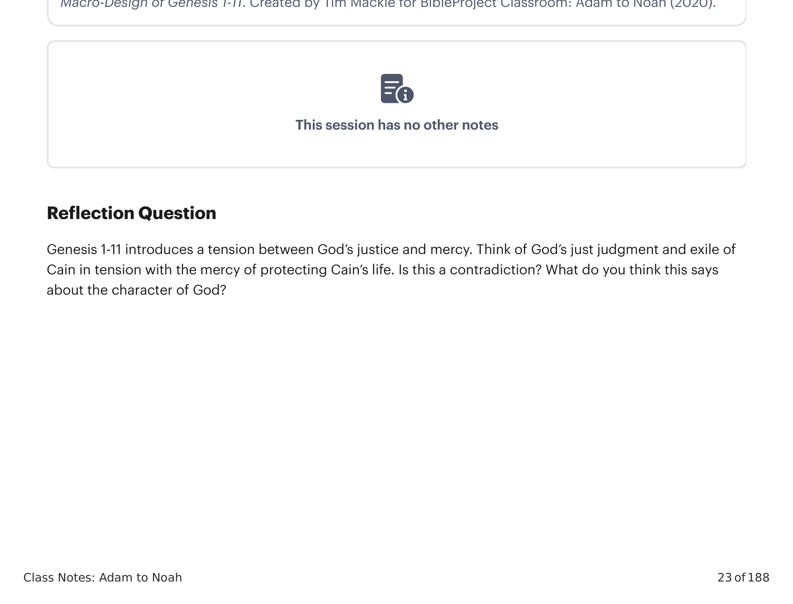

| UnidadeUnit | TemaTheme |
|---|---|
| A1 | 1:1-2:3 Criação do cosmo sagrado a partir das águas do caos / imagem humana de Deus / bênção / frutificar e multiplicar1:1-2:3 Creation of sacred cosmos from chaos waters / human image of God / blessing / fruitful and multiply |
| B1 | 2:4-3:24 Templo-jardim montanha / pecado, nudez, maldição, exílio2:4-3:24 Mountain-garden temple / sin, nakedness, curse, exile |
| B2 | 4:1-16 A próxima geração peca / irmãos se dividem / primogênito não escolhido / maldição, exílio4:1-16 Next generation sins / brothers divide / firstborn not chosen / curse, exile |
| C1 | 4:17-26 Adão a Lameque: 7 gerações + 3 filhos / cidade de Caim / assassinato / 70 x 74:17-26 Adam to Lemek: 7 generations + 3 sons / city of Cain / murder / 70 x 7 |
| C2 | 5:1-32 Adão a Noé: 10 gerações + 3 filhos / promessa de consolo5:1-32 Adam to Noah: 10 generations + 3 sons / promise of comfort |
| B3 | 6:1-8 Rebelião cósmica no Céu e na Terra: filhos de Deus invadem a terra, levando ao dilúvio6:1-8 Cosmic rebellion in Heaven and Earth: sons of God invade the land, leading to the flood |
| A2 | 6:9-9:19 Des-criação pelas águas do caos e recriação / Noé como nova humanidade / bênção / frutificar e multiplicar6:9-9:19 De-creation by chaos waters and recreation / Noah as new humanity / blessing / fruitful and multiply |
| B1 | 9:20-21 Vinha do jardim / pecado, nudez9:20-21 Garden vineyard / sin, nakedness |

| UnidadeUnit | TemaTheme |
|---|---|
| B2 | 9:22-27 A próxima geração peca / irmãos se dividem / primogênito não escolhido / maldição, dispersão9:22-27 Next generation sins / brothers divide / firstborn not chosen / curse, scattering |
| C1 | 10:1-32 Noé + 3 filhos / 7 gerações até Pelegue / Cidade de Babilônia e Assíria / 70 nações10:1-32 Noah + 3 sons / 7 generations to Peleg / City of Babylon and Assyria / 70 nations |
| B3 | 11:1-9 Rebelião cósmica em Babilônia: filhos de Adão invadem os céus, levando à dispersão11:1-9 Cosmic rebellion in Babylon: sons of Adam invade the heavens, leading to the scattering |
| C2 | 11:10-26 Sem a Abrão: 10 gerações / 3 filhos11:10-26 Shem to Abram: 10 generations / 3 sons |
| A3 | 12:1-9 Abrão como nova humanidade / bênção / frutificar e multiplicar12:1-9 Abram as new humanity / blessing / fruitful and multiply |

Gênesis 1-11 introduz uma tensão entre a justiça e a misericórdia de Deus. Pense no justo julgamento e no exílio de Caim por Deus em tensão com a misericórdia de proteger a vida de Caim. Isso é uma contradição? O que você acha que isso diz sobre o caráter de Deus?Genesis 1-11 introduces a tension between God's justice and mercy. Think of God's just judgment and exile of Cain in tension with the mercy of protecting Cain's life. Is this a contradiction? What do you think this says about the character of God?